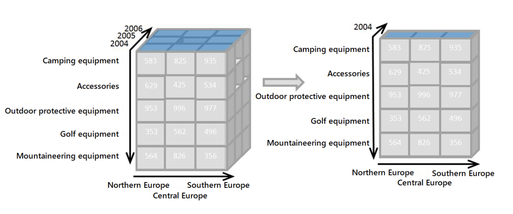

Илья Воронцов
Мастерская дата-журналистики Системного Блока, ЛШ-2024, Дубна
Но мы умеем смотреть только на плоское
Slice / Dice: зафиксировать значение по одной из осей
Slice / Dice: зафиксировать значение по одной из осей
Pivot: поменять оси табличного представления.
= QUERY(A1:E100; "SELECT A, B WHERE C > 100 AND D = 42")
SELECT колонки [PIVOT колонка] WHERE условие [GROUP BY колонки] [ORDER BY колонки ASC/DESC] [LIMIT количество [OFFSET сдвиг]]
select dept, max(salary) group by dept
| dept | max-salary |
|---|---|
| Eng | 800 |
| Marketing | 600 |
| Sales | 1234 |
select sum(salary), max(lunchTime) pivot dept
| Eng sum-salary | Marketing sum-salary | Sales sum-salary | Eng max-lunchTime | Marketing max-lunchTime | Sales max-lunchTime |
|---|---|---|---|---|---|
| 2100 | 800 | 750 | 13:00:00 | 13:00:00 | 12:00:00 |
select sum(salary), max(lunchTime) pivot dept
| Eng sum-salary | Marketing sum-salary | Sales sum-salary | Eng max-lunchTime | Marketing max-lunchTime | Sales max-lunchTime |
|---|---|---|---|---|---|
| 2100 | 800 | 750 | 13:00:00 | 13:00:00 | 12:00:00 |
= VLOOKUP(искомое значение;
таблица;
номер столбца;
интервальный просмотр)
идентификатор — самая левая колонка!
интервальный просмотр зафиксировать в 0
csv/tsv — текстовый файл. Значит можно редактировать в текстовом редакторе
Регулярные выражения
OpenRefine
diff
Warning: Будьте осторожны с данными, содержащими разделители (табуляции, новые строки, пробелы, запятые)
Данные могут прийти в других форматах